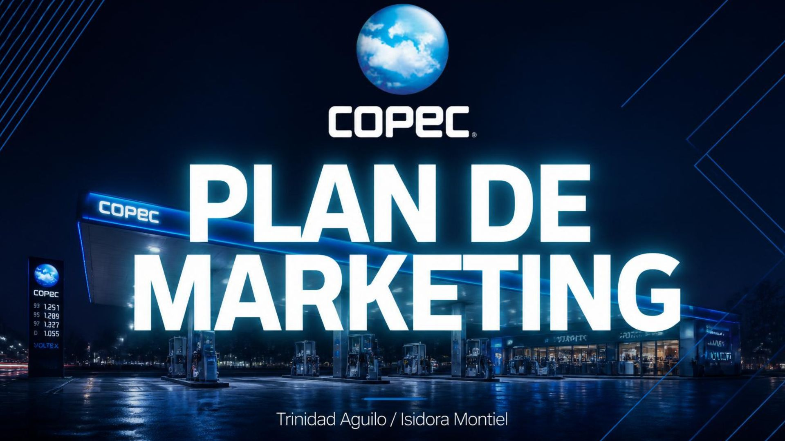

Proyectos
Aquí algunos proyectos en los que he trabajado.
Nike: Estrategia y experiencia
Analisis de las estrategias de ventas de Nike y la experiencia del cliente.
Ver proyecto
Proyecto finanzas
Ideas inteligentes en Valparaiso y solucion tegnologica para la gestion urbana del estacionamiento.
Ver proyecto